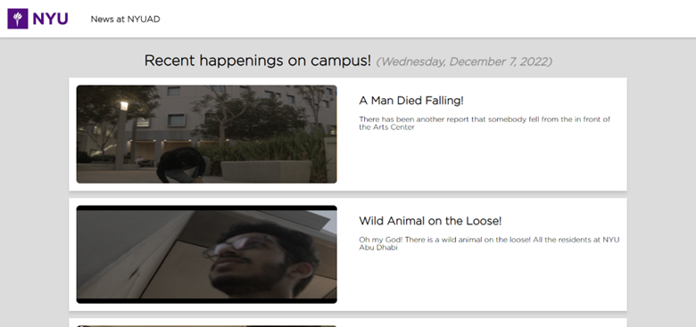
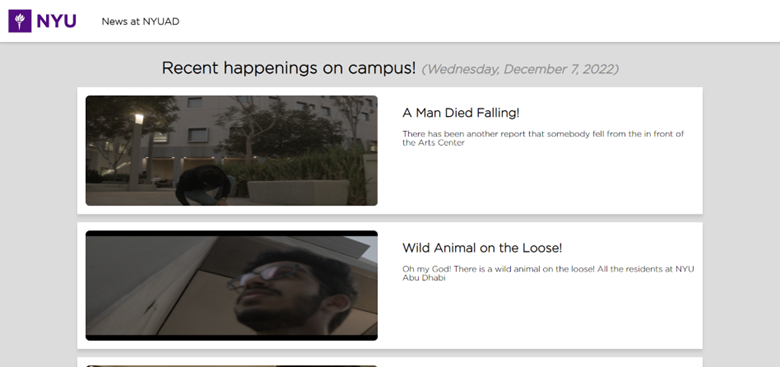
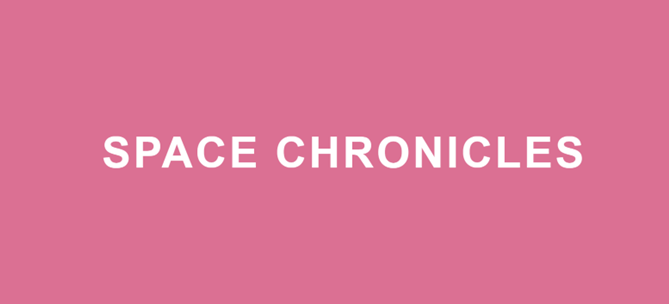
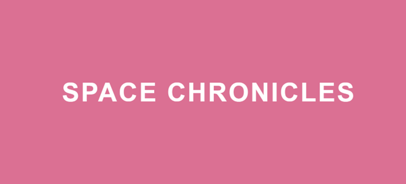

Hello, I am Ramsha. I was born and raised in Pakistan. I am a sophomore at New York University Abu Dhabi, studying Computer Science and Interactive Media. I am passionate about software and web development and am always in search of opportunities to hone my skills. This is my portfolio: a collection of projects I have completed in my communications lab class.
 

 
